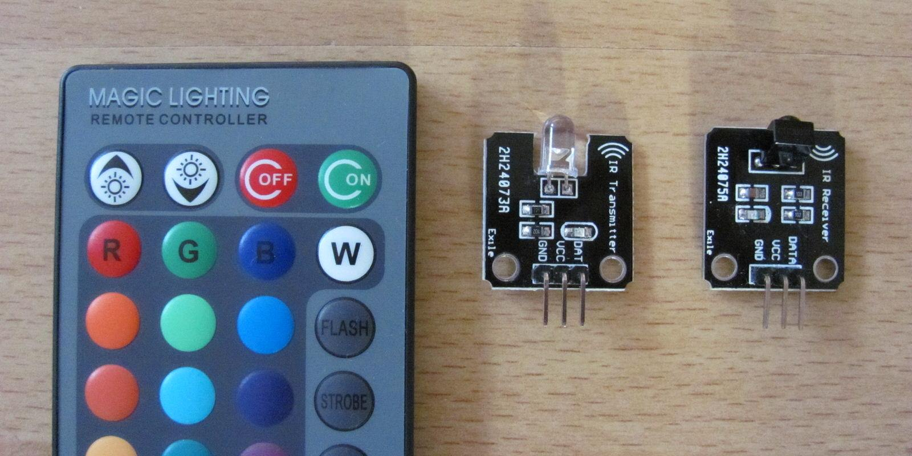

IRLremote 2.0.2¶

New lightweight IR library with different, smarter implementation.
This library is way more efficient than the "standard" IR library from Ken Shirriff.
Table of Contents¶
- Overview
- Library Installation
- API Documentation
- Receive Protocols
- Setup Receiving
- Read IRLremote
- Time Functions
- Sending
- Adding new protocols
- How it works
- Links
- Version History
- License and Copyright
Overview¶
The main improvements are: * Faster decoding (on the fly) * Huge Ram improvements (13 bytes ram to decode NEC) * Huge Flash improvements (less than 1kb flash to decode NEC) * Receiving and sending possible * Very accurate even when pointing in different directions * Easy to use/customizable * Maximum error correction * Uses PinInterrupt or PinChangeInterrupts/No timer needed * Usable on almost any pin * Perfect for Attinys * All mainstream protocols supported * Very accurate hash decoding for unknown protocols * IDE 1.6.x compatible (not 1.0.5 compatible)
Supported Protocols * NEC * Panasonic * ~~Sony 12~~ (TODO) * Hash (For any unknown protocol) * ~~RawIR (For dumping the raw data)~~ (TODO) * Ask me for more
Planned features: * Test sending functions (for Panasonic, Sony etc) * Add more protocols (RC06) * Improve bit banging PWM? * Add Raw dump sending option * Implement Sony 15, 20 properly
Library Installation¶
Install the library as you are used to. More information can be found here.
API Documentation¶
For a very fast library example see the Receiving example.
Receive Protocols¶
You can choice between multiple protocols. All protocols are optimized in a way that the recognition of the selected protocol is set to a maximum. This means you can only decode a single protocol at a time but with best recognition.
Supported Protocols:¶
- NEC
- Panasonic
- IRHash
Examples:¶
// Choose the IR protocol of your remote
CNec IRLremote;
//CPanasonic IRLremote;
//CHashIR IRLremote;
Setup Receiving¶
To use the receiving you have to choose a PinInterrupt or PinChangeInterrupt pin. They work a bit different under the hood but the result for IR is the same. In order to use PinChangeInterrupts you also have to install the library.
You can also terminate the receiver. This sets pins to input again to safely remove connections. This is normally not required.
Function Prototype:¶
bool begin(uint8_t pin);
bool end(uint8_t pin);
Examples:¶
// Choose a valid PinInterrupt or PinChangeInterrupt pin of your Arduino board
#define pinIR 2
// Start reading the remote
// PinInterrupt or PinChangeInterrupt will automatically be selected
// False indicates a wrong selected interrupt pin
if (!IRLremote.begin(pinIR))
Serial.println(F("You did not choose a valid pin."));
// End reading the remote
IRLremote.end(pinIR);
Read IRLremote¶
If there is input available you can read the data of the remote. It will return the received data and automatically continue reading afterwards. Check if the remote is available before, otherwise you will get an empty structure back.
The returned data type will differ with the selected protocol. Each protocol has an address and a command member, but their size may differ. See the protocol section for more information.
Function Prototype:¶
bool available(void);
// Valid datatypes depending on the selected protocol:
Nec_data_t read(void);
Panasonic_data_t read(void);
HashIR_data_t read(void);
Examples:¶
// Check if new IR protocol data is available
if (IRLremote.available())
{
// Get the new data from the remote
auto data = IRLremote.read();
// Print the protocol data
Serial.print(F("Address: 0x"));
Serial.println(data.address, HEX);
Serial.print(F("Command: 0x"));
Serial.println(data.command, HEX);
Serial.println();
}
Time Functions¶
The API provides a few interfaces to check some timings between the last Event or if the remote is currently still receiving. This is especially useful when you want to build higher level APIs around the remote or when you have other interrupt sensitive code that disables interrupts which affects the IR reading quality.
Function Prototype:¶
bool receiving(void);
uint32_t timeout(void);
uint32_t lastEvent(void);
uint32_t nextEvent(void);
Examples:¶
// Check if we are currently receiving data
if (!IRLremote.receiving()) {
FastLED.show();
}
// Return relativ time between last event time (in micros)
if (IRLremote.timeout() > 1000000UL) {
// Reading timed out 1s, release button from debouncing
digitalWrite(BUILTIN_LED, LOW);
}
// Return absolute last event time (in micros)
Serial.println(IRLremote.lastEvent, HEX);
Serial.println(micros(), HEX);
// Return when the next event can be expected.
// Zero means at any time.
// Attention! This value is a little bit too high in general.
// Also for the first press it is even higher than it should.
if (IRLremote.nextEvent() == 0) {
// We timed out, this is the last event in this series of reading
digitalWrite(BUILTIN_LED, LOW);
}
Sending¶
For sending see the SendSerial/Button examples. Sending is currently beta. The library focuses more on decoding, rather than sending. You first have to read the codes of your remote with one of the receiving examples. Choose your protocol in the sending sketch and use your address and command if choice.
Sending for Panasonic and Sony12 is not confirmed to work, since I have no device here to test. Let me know if it works!
Adding new protocols¶
You can also ask me to implement any new protocol, just file an issue on Github or contact me directly. Or you can just choose the hash option which works very reliable for unknown protocols.
More projects + contact can be found here: http://www.NicoHood.de
How it works¶
The idea is: minimal implementation with maximal recognition. You can still decode more than one protocol at the same time.
The trick is to only check the border between logical zero and logical one to terminate space/mark and rely on the lead/length/checksum as error correction. Lets say a logical 0 is 500ms and 1 is 1000ms. Then the border would be 750ms to get maximum recognition instead of using just 10%.
Other protocols use different timings, leads, length, checksums so it shouldn't interfere with other protocols even with this method.
This gives the library very small implementation with maximum recognition. You can point into almost every possible direction in the room without wrong signals.
It saves a lot of ram because it decodes the signals "on the fly" when an interrupt occurs. That's why you should not add too many protocols at once to exceed the time of the next signal. However its so fast, its shouldn't make any difference since we are talking about ms, not us.
In comparison to Ken's lib, he records the signals (with timer interrupts) in a buffer which takes a lot of ram. Then you need to check in the main loop if the buffer has any valid signals. It checks every signal, that's why its slow and takes a lot of flash. And it also checks about 10~20% from the original value. Lets say a pulse is 100ms. Then 80-120ms is valid. That's why the recognition is worse. And he also doesn't check the protocol intern error correction. For example NEC has an inverse in the command: the first byte is the inverse of the 2nd byte. Its easy to filter wrong signals then. So every protocol has its built in checksums, which we will use. And I also check for timeouts and start new readings if the signal timed out. The only positive thing is that with the timer the pin is more flexible. However i will try to implement a PCINT version later.
For sending I decided to use Bitbang. This works on every MCU and on any PIN. He used proper timers, but only PIN 3 is usable for sending (an interrupt pin). Bitbang might have problems with other interrupts but should work relyable. You can turn off interrupts before sending if you like to ensure a proper sending. Normal IR devices shouldn't complain about a bit intolerance in the PWM signal. Just try to keep interrupts short.
This text should not attack the library from Ken. It's a great library with a lot of work and the most used IR library yet. It is just worth a comparison and might be still useful like the old SoftSerial against the new one.
Links¶
- https://github.com/z3t0/Arduino-IRremote
- http://www.mikrocontroller.net/articles/IRMP#Literatur
- JCV/Panasonic/Japan/KASEIKYO
- http://www.mikrocontroller.net/attachment/4246/IR-Protokolle_Diplomarbeit.pdf
- http://www.roboternetz.de/phpBB2/files/entwicklung_und_realisierung_einer_universalinfrarotfernbedienung_mit_timerfunktionen.pdf
- Sony
- http://picprojects.org.uk/projects/sirc/sonysirc.pdf
- http://www.benryves.com/products/sonyir/
- http://www.righto.com/2010/03/understanding-sony-ir-remote-codes-lirc.html
- http://mc.mikrocontroller.com/de/IR-Protokolle.php#SIRCS
- NEC
- http://techdocs.altium.com/display/FPGA/NEC+Infrared+Transmission+Protocol
- http://www.sbprojects.com/knowledge/ir/nec.php
Version History¶
2.0.2 Release (08.04.2018)
* Added ESP8266 #20
2.0.1 Release (16.01.2018)
* Fix makefile compilation
2.0.0 Release (07.03.2017)
* Focus on single protocol implementation
* Added better keycode definitions #11
* Updated keywords.txt
* Tabs -> Spaces
* Added receive and time interface templates
1.9.0 Release (Never officially released)
* Added API as class
* Fixed NEC Timeout value
* NEC repeat code now integrated
* Fixed Sony12 address
* Added debounce
* More flexible selection of protocols
* PinChangeInterrupt library dynamically used
* Added F() makro for examples
* Removed older examples
* Removed the general decoding function to improve decoding functionality
* New inputs are generated at runtime, saves flash and ram
* Faster interrupt if valid signal was received
* Improved NEC sending
* Added to Arduino IDE 1.6.x library manager
* Some other complex library structure changes
* Made reading interrupt save
* Improved RawIR
* Added hash function for unknown protocols
1.7.4 Release (19.04.2015)
* Updated examples
* Added PinChangeInterrupt example
* Removed NoBlocking API and integrated this into the examples
* Added IRL_VERSION definition
* Added library.properties
* Improved Raw Example
1.7.3 Release (27.11.2014)
* Fixed critical Typo in decoding function
* Fixed weak function variable type
* Updated Raw Example slightly
1.7.2 Release (18.11.2014)
* Added always inline macro
* Changed duration to 16 bit
* Added easier PCINT map definitions
* Fixed ARM compilation for receiving (sending is still not working)
1.7.1 Release (15.11.2014)
* Added 16u2 HoodLoader2 example
1.7 Release (15.11.2014)
* Changed IR bit order from MSB to correct LSB
* This improved the overall handling and also reduced flash usage
* Improved, extended sending function
* Added Receive Send Example
* Added smaller Basic PCINT function
1.6 Release (14.11.2014)
* Reworked decoding template
* Added Sony 12 protocol
* Added PCINT example for advanced users
1.5.1 Release (21.09.2014)
* improved Bitbang PWM
* fixed SendSerial example
1.5.0 Release (20.09.2014)
* huge Ram and Flash improvements
* new library structure
* compacter code/new structure
* more examples
* more than one protocol possible at the same time
* customizable decoding functions
1.4.7 Release (13.09.2014)
* changed NEC to template
1.4.6 Release (30.08.2014)
* fixed writing address + command bug
* added sending function for NEC
* added Led example
1.4.5 Release (30.08.2014)
* fixed raw protocol
1.4.4 Release (07.08.2014)
* added raw protocol (broken)
1.4.3 Release (06.08.2014)
* changed and improved a lot of stuff
* rearranged classes
* removed older versions
1.0 - 1.3 (17.03.2014 - 03.5.2014)
* Release and minor fixes
License and Copyright¶
If you use this library for any cool project let me know!
Copyright (c) 2014-2015 NicoHood
See the readme for credit to other people.
Permission is hereby granted, free of charge, to any person obtaining a copy
of this software and associated documentation files (the "Software"), to deal
in the Software without restriction, including without limitation the rights
to use, copy, modify, merge, publish, distribute, sublicense, and/or sell
copies of the Software, and to permit persons to whom the Software is
furnished to do so, subject to the following conditions:
The above copyright notice and this permission notice shall be included in
all copies or substantial portions of the Software.
THE SOFTWARE IS PROVIDED "AS IS", WITHOUT WARRANTY OF ANY KIND, EXPRESS OR
IMPLIED, INCLUDING BUT NOT LIMITED TO THE WARRANTIES OF MERCHANTABILITY,
FITNESS FOR A PARTICULAR PURPOSE AND NONINFRINGEMENT. IN NO EVENT SHALL THE
AUTHORS OR COPYRIGHT HOLDERS BE LIABLE FOR ANY CLAIM, DAMAGES OR OTHER
LIABILITY, WHETHER IN AN ACTION OF CONTRACT, TORT OR OTHERWISE, ARISING FROM,
OUT OF OR IN CONNECTION WITH THE SOFTWARE OR THE USE OR OTHER DEALINGS IN
THE SOFTWARE.